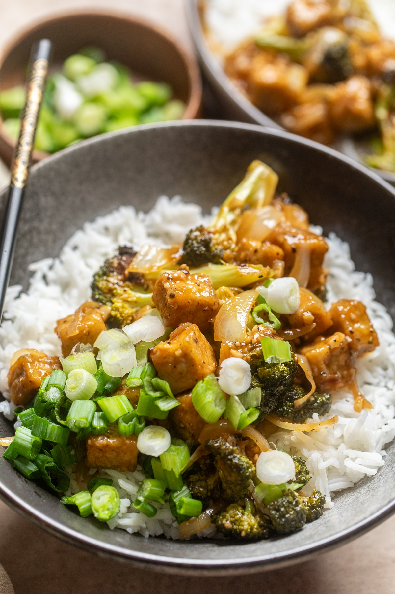

Black Pepper Tofu

This black pepper tofu recipe is an easy vegan dinner meal idea that is a spin on the Chinese takeout classic, black pepper chicken.
This one is spicy but you can kick up the heat more or less to your taste buds. We’ll walk you through how to easily make this dish that we know you will love!
Ingredients
- Extra Firm Tofu
- Olive Oil
- Cornstarch
- Vegetable Stock
- Soy Sauce
- Rice Wine Vinegar
- Brown Sugar
- Sesame Oil
Steps
- Preheat the oven to 425°F/220°C. Line two small baking sheets with parchment paper.
- Add tofu cubes to a large bowl. Drizzle with 1 tablespoon of olive oil. Toss gently to coat. Sprinkle 2 tablespoon cornstarch, ¼ teaspoon salt, and ¼ pepper over the tofu, and toss again to coat evenly. Pour the tofu on a prepared baking sheet and spread out evenly so they are not touching. Set aside.
- Add cut broccoli pieces into the same bowl and drizzle with 2 tablespoon oil. Toss together and add to the second baking sheet, spreading out evenly. Place both sheet pans into the oven. Cook for 20-25 minutes or until broccoli is fork tender.
- While baking, in a small bowl, add stock, soy sauce, rice wine vinegar, brown sugar, sesame oil, and sriracha if adding. Whisk together well. Add in remaining 1 tablespoon of cornstarch and whisk together until no clumps remain. Set aside.
- Over medium heat, add remaining 2 tablespoon oil to a large skillet. Once hot, add onions and sauté for 4-5 minutes or until softened. Add remaining 1 ½ teaspoon black pepper, garlic, and ginger and stir together again. Cook for 1 minute. Pour in sauce mixture and stir together. Simmer until thickened.
- Right before serving add in the cooked tofu and broccoli and toss to combine. Heat only until warmed (longer with soften the tofu). Serve over rice, noodles or quinoa. Top with green onions if desired.